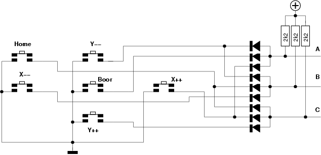
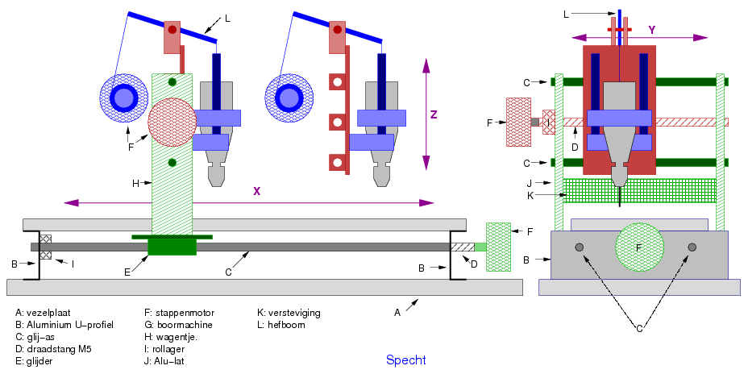
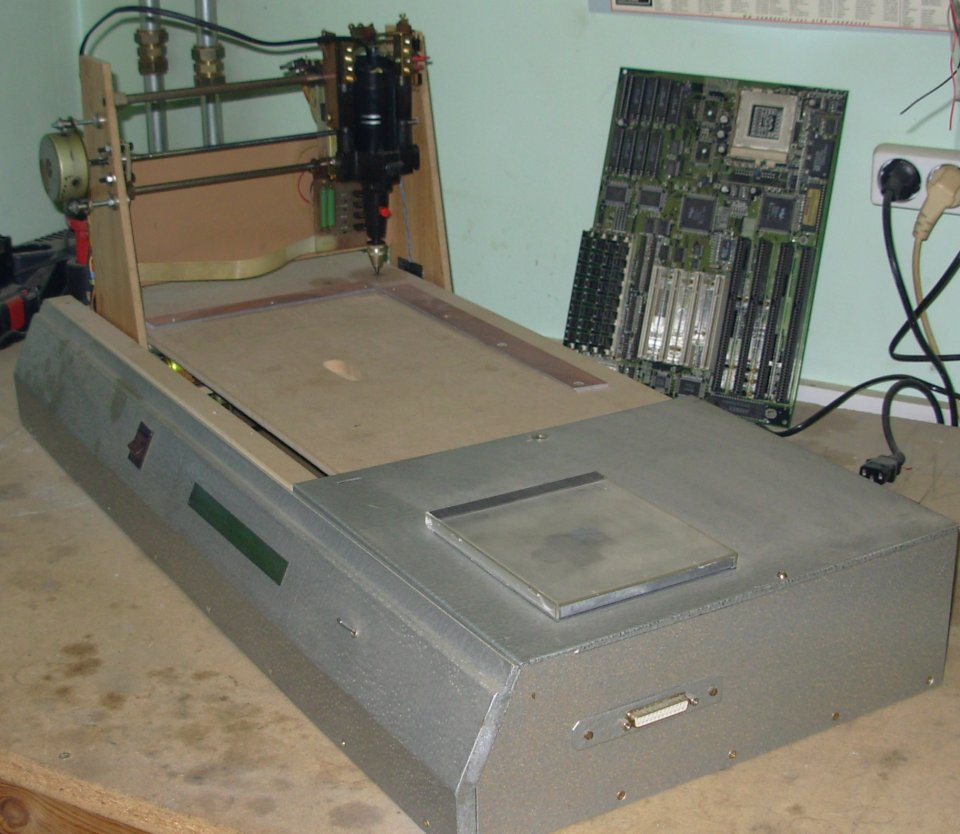
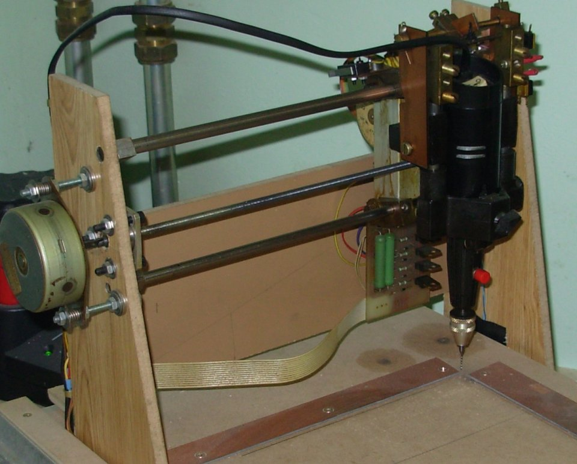
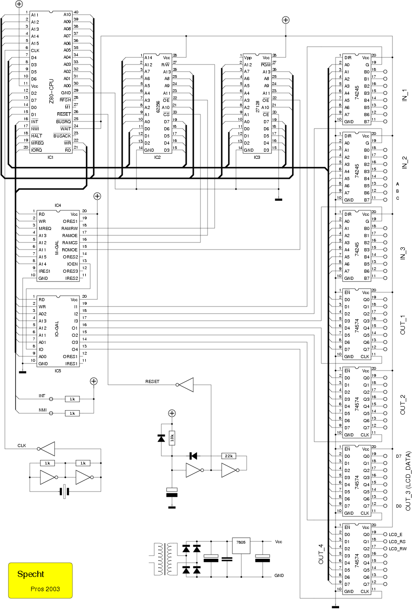
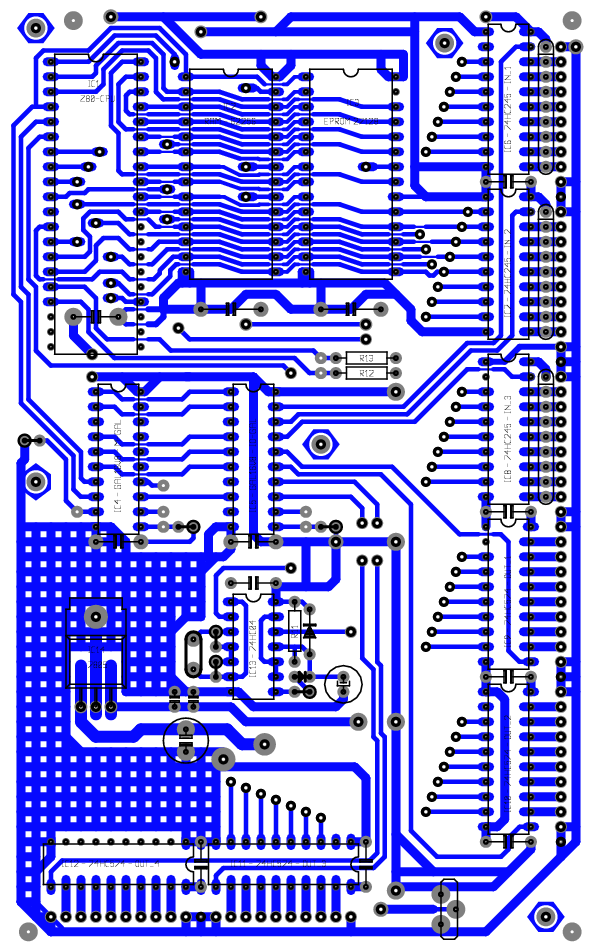
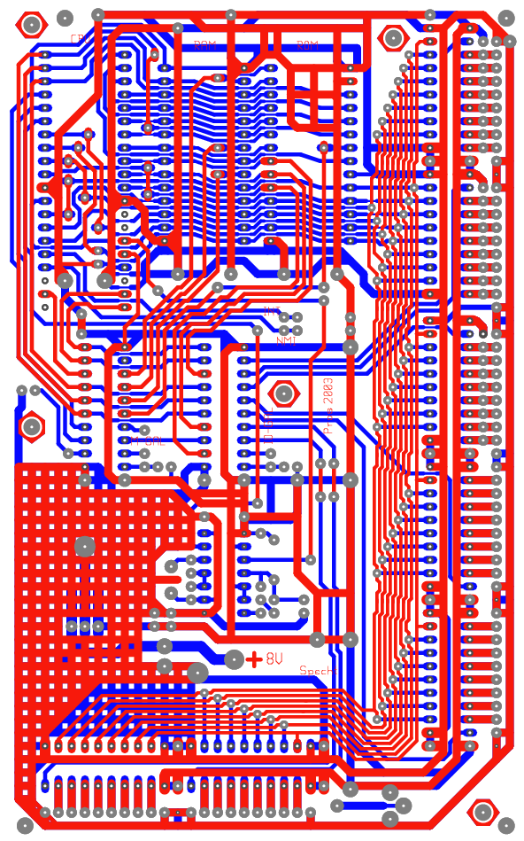

De Specht is een processor-gestuurde printboormachine. De processor (een Z80-CPU) ontvangt de gegevens van de te boren gaten van een PC via een MeetKabel. Die gegevens zijn vectors, uitgedrukt in stappen voor de X- en de Y-stappenmotoren. Nadat Specht alle data heeft ontvangen, begint hij onmiddelijk aan zijn taak, werkt die af, en gaat vervolgens wachten op een volgende opdracht...
Naast het traditionele gebruik bestaat ook de mogelijkheid
Specht manueel te besturen.
Daarvoor zijn een aantal toetsen voorzien; de namen spreken voor
zich.
Wordt een X- of een Y-toets kort ingedrukt, dan beweegt
Specht de bijbehorende motor 1 stap, wat “twee keer
niks” is.
Door een toets ingedrukt te houden, gaat de motor sneller en
sneller draaien, tot hij zijn maximum snelheid bereikt heeft.
Hoe dat in zijn werk gaat, wordt duidelijk als je de
broncode
bekijkt.
| Home | Y-- | |
| X-- | Boor | X++ |
| Y++ |

Op het schema hiernaast valt te zien dat we, door een beetje te
goochelen met dioden, 6 toetsen kunnen aansluiten op 3 ingangen
van de CPU-kaart.
Naast de toetsen zijn er nog twee LED's aanwezig, waarmee
Specht zijn status bekend maakt: een rode LED in de
“Boor” toets die oplicht als er een gat geboord wordt, en een
twee-kleuren LED, die van groen naar rood springt als de
interrupt-routine
uitgevoerd wordt.
Meer info wordt weergegeven door een LCD-display.
De naam “MeetKabel” stamt ergens uit de tweede helft van de
jaren '80, toen het (op de Amiga) gebruikt werd om allerlei
meettoestellen aan te sturen. De opzet is vergelijkbaar met een
(paralelle) printer-kabel, met dit verschil dat er twee
exemplaren met de uitbreidingsprint verbonden zijn.
Om te weten met welke kabel het te bedienen toestel verbonden
is, beschikt ieder apparaat over een unieke “elektronische
handtekening”.
Hier de pinbezetting van de 25-polige connector (aan de PC-zijde
is de kabel aangesloten via een 15-polige connector):
Zoals in de broncode te zien is, wordt er geen gebruik gemaakt van handshaking of iets dergelijks. De PC plaatst een byte op de databus (D0 ... D7), geeft met 2 bits aan, om welke data het gaat (X-L, X-H, Y-L of Y-H), en maakt de INT-pin kortstondig laag. Let wel: de INT-pin, niet de NMI-pin! Dat betekent dat de Specht interrupts kan uitschakelen. En dat doét hij ook, als hij een print aan het boren is.

De opbouw van Specht is vrij eenvoudig van opzet:
Een onderstel waarop een wagentje zich in X-richting kan
bewegen.
Op dit wagentje bevindt zich een tweede exemplaar, dat zich in
Y-richting kan verplaatsen.
Hierop dan weer een gemodificeerde mini-boorkolom waarin het
eigenlijke boormachientje een plaats vindt. Dit laatste kan zich
in Z-richting bewegen.
De aandrijving van beide wagentjes en boormachientje gebeurt
door middel van 3 stappenmotoren. Verder zijn er 6 contacten
voorzien: 2 per beweegbaar deel, die de software toelaten zowel
begin- als eindpunt te dedecteren.
Het boormachientje kan niet enkel in- en uitgeschakeld worden;
het kan ook aan een laag toerental draaien, zodat het van
hieruit op korte tijd zijn maximum snelheid kan ontwikkelen.
Hieronder nog wat foto's van het opgebouwde geheel:


Het schema hieronder lijkt uitgebreid, maar bij nader onderzoek valt het op te delen in enkele eenvoudige blokken.

Bovenaan zien we de processor (IC1, een Z80-CPU), vergezeld van RAM
(IC2, een62256) en ROM (IC3, een 27128-eprom).
De rechterzijde wordt geheel in beslag genomen door 3 ingangs- en
4 uitgangs-buffers (IC6 ... IC12).
Aan de linkerzijde bevinden zich ―naast de klokgenerator(IC13,
een 74HC04)― 2 GAL's (IC4 en IC5, beiden een GAL16V8), die het
dataverkeer op de print regelen.
Wat rest (in het midden) is een reset-schakeling, die eveneens
deel uitmaakt van IC13.
IC4, de M-GAL, regelt het dataverkeer tussen CPU en diens
geheugen-blokken, ROM en RAM. Daarnaast geeft de M-GAL een
seintje aan zijn collega, de IO-GAL. Die bedient op zijn beurt
de ingangs- en uitgangsbuffers.
Hieronde de broncode voor beide GAL's:
GAL16V8 IDNT MGAL datum 20-05-2003 SYN 1 AC0 1 ! RD Vcc WR ORES1 MREQ RAMRW A13 RAMOE A12 RAMCS A11 ROMOE A15 ORES2 A14 IOEN IRES1 ORES3 GND IRES2 @ /RAMRW AC1 1 RD @ /RAMOE AC1 1 A15 * /MREQ * /RD @ /RAMCS AC1 1 A15 * /MREQ @ /ROMOE AC1 1 /MREQ * /A15 * /A14 + /MREQ * /A15 * /A13 + /MREQ * /A15 * /A12 + /MREQ * /A15 * /A11 @ IOEN AC1 1 /MREQ * /A15 * A14 * A13 * A12 * A11 GAL16V8 IDNT IOGAL datum 20-05-2003 SYN 1 AC0 1 ! RD Vcc WR I1 A02 I2 A13 I3 A12 O1 A11 O2 A01 O3 IOEN O4 A00 ORES1 GND IRES1 @ /I1 AC1 1 IOEN * /RD * /A00 * /A01 * /A02 @ /I2 AC1 1 IOEN * /RD * A00 * /A01 * /A02 @ /I3 AC1 1 IOEN * /RD * /A00 * A01 * /A02 @ /O1 AC1 1 IOEN * /WR * A00 * A01 * /A02 @ /O2 AC1 1 IOEN * /WR * /A00 * /A01 * A02 @ /O3 AC1 1 IOEN * /WR * A00 * /A01 * A02 @ /O4 AC1 1 IOEN * /WR * /A00 * A01 * A02
De software voor de Z80-CPU is in assembler geschreven.
Hier
staat de
listing, een html-bestand dat automatisch opgemaakt wordt
tijdens het assembleren van de broncode.
De eerste kolom geeft het adres weer en de tweede de code,
beiden hexadecimaal. De rest van elke regel wordt ingenomen door
de broncode.

